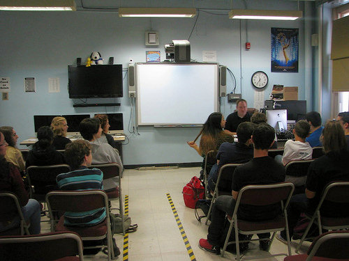

As a senior at Staten Island Technical High School, I have experienced many different things over the span on the 4 years. I have grown from freshmen year dramatically, not only as a student academically but also as a person.

As a Freshman, I was required to take TV and movie studio production class, which consisted of filming inside the news room studio, and we all had the opportunity to take different roles. My favorite role was being the camera person, I loved using the camera to film specific shots, which included the headroom of the specific host or guest for the show, and I loved being able to capture the emotion and moments for the viewers.

We also had the project of creating a music video, for my group we did a music video for Little Mix's song Black Magic, it took about 7 hours at my partner's home. I rememeber it was the coldest night on December, and I still remmeber being so cold, outside the house while filming them inside the house. I learned to never ever film in the winter time, especially outdoors, because you can get sick, easily. the next day I came to school, I was sick.
As a Sophomore, I was required to take chemistry, which included chemistry lab, I did not enjoy the lab as much as I should have, as I was too scared of the chemical reactions at time. Also the goggles were the not the most comfortable ones, but I endured the difficulties and enjoyed the lab as I got to learn how and why we had to memorize certain safety precautions. in summary it was a very unique experience for me.